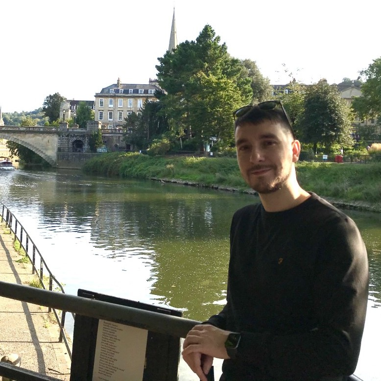

Batuhan Yildirim

CV
Google Scholar
Github
Twitter
LinkedIn
Bio
I'm a PhD candidate in the Molecular Engineering group
at the University of Cambridge. I write software and research machine learning methods to
facilitate the discovery and characterisation of materials. This includes:
- creating generative models for inorganic crystal structures, as well as structure-property models to predict their properties.
- developing segmentation algorithms to detect, locate and quantify systems of particles from electron microscopy images.
Publications
- 3-D Inorganic Crystal Structure Generation and Property Prediction via Representation Learning
- Callum J. Court*, Batuhan Yildirim*, Apoorv Jain and Jacqueline M. Cole
- J. Chem. Inf. Model. 2020
- *Equal Contribution
- [Just accepted]
[paper]
[code]
- ImageDataExtractor: A Tool To Extract and Quantify Data from Microscopy Images
- Karim T. Mukaddem, Edward J. Beard, Batuhan Yildirim, and Jacqueline M. Cole
- J. Chem. Inf. Model. 2019
- [paper]
[code]
[site]
Posts
Spectral Graph Convolutions - Fourier Transforms (on Graphs) for the Birdwatcher
Contact:
by256[at]cam.ac.uk